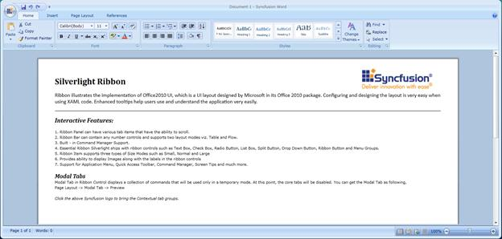
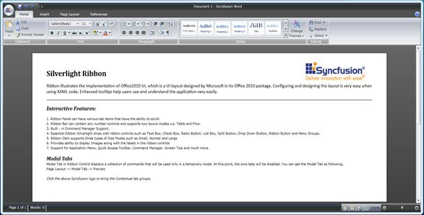
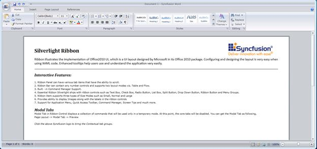
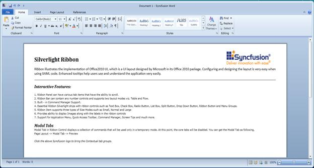
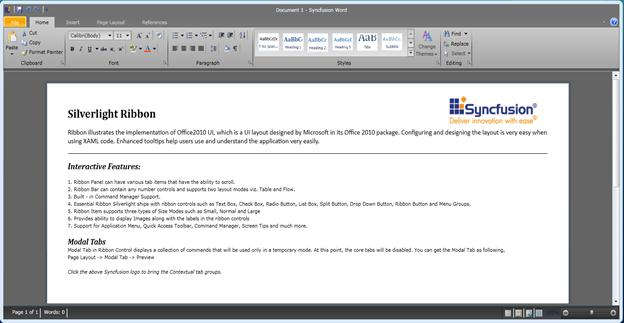
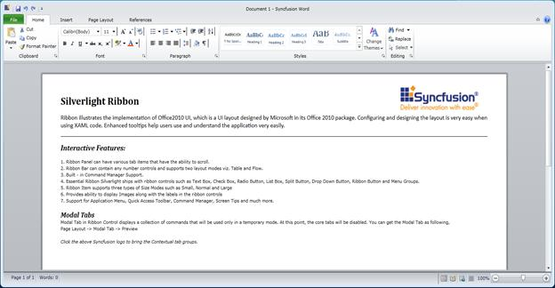
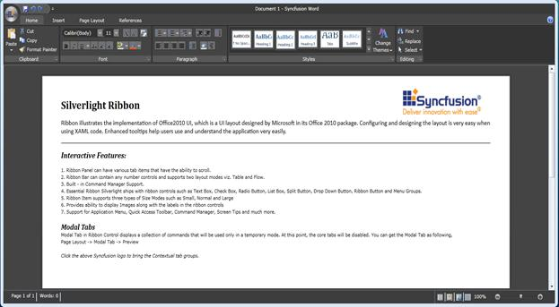
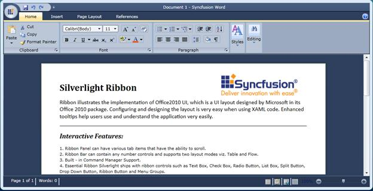

The supported skins for Ribbon Control are mentioned below:
· Office2007Blue
· Office2007Black
· Office2007Silver
· Office2010Blue
· Office2010Black
· Office2010Silver
· VS2010
· Blend
Add the following assemblies to apply the corresponding theme for Ribbon Control:
· Syncfusion.Theming.Office2007Blue.dll
· Syncfusion.Theming.Office2007Black.dll
· Syncfusion.Theming.Office2007Silver.dll
· Syncfusion.Theming.Office2010Blue.dll
· Syncfusion.Theming.Office2010Black.dll
· Syncfusion.Theming.Office2010Silver.dll
· Syncfusion.Theming.VS2010.dll
· Syncfusion.Theming.Blend.dll
Use Case Scenario
This feature helps users to apply the supported skins for Ribbon Control. The supported Skins are:
· Office2007Blue
· Office2007Black
· Office2007Silver
· Office2010Blue
· Office2010Black
· Office2010Silver
· VS2010
· Blend
Sample Link
To run the Ribbon sample:
· Open Essential Studio dashboard.
· Click Run locally installed samples from the Silverlight drop-down list.
· Select Tools on the sample browser.
· Select Ribbon -> Ribbon Instance Demo.
How to Apply Skins?
We can apply skins for Ribbon control in code-behind using the following code snippet:
|
[C#] Ribbon myRibbon = new Ribbon(); SkinManager.SetVisualStyle(myRibbon, Syncfusion.Windows.Controls.Theming.VisualStyle.Office2007Blue); |
We can apply skins in XAML using the following code snippet:
|
[XAML]
<syncfusion:Ribbon x:Name="myRibbon" Syncfusion:SkinManager.VisualStyle="Office2007Blue" /> |
The output for the above code snippet is displayed in the following screenshot:

Figure 656: Office2007Blue Theme for Ribbon
The various Themes of Ribbon control are displayed in the following screenshots:

Figure 657: Office2007Black Theme for Ribbon

Figure 658: Office2007Silver Theme for Ribbon

Figure 659: Office2010Blue Theme for Ribbon

Figure 660: Office2010Black Theme for Ribbon

Figure 661: Office2010Silver Theme for Ribbon

Figure 662: Blend Theme for Ribbon

Figure 663: VS2010 Theme for Ribbon
See Also